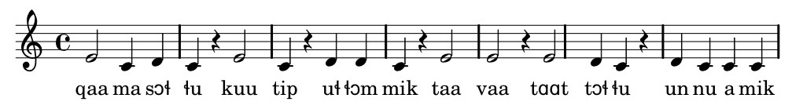

Pi-leq-qaar-ne-ran-ni:
Uden dem kan man nemlig ikke undgå at snuble i de lange, grønlandske ord. Men før vi gør det, er vi nødt til at lære reglerne for stavelsesdeling, hvilket heldigvis er en helt ukompliceret historie bare du hele tiden husker, at -ng- kun er een konsonant nemlig /ŋ/ og at /ŋŋ/ staves -nng-.
Der er en stavelsesgrænse mellem to konsonanter. tut---tu, a-te-qar---pu-nga, Ma-niit---su-mu-ka-ru-suk---ka-lu-a-qaa-nga, a-jun---ngil---lu-in---nar---poq
Der er en stavelsesgrænse før en enkelt konsonant. tut-tu, a---te---qar-pu---nga, Ma---niit-su---mu---ka---ru---suk-ka---lu-a---qaa---nga, a---jun-ngil-lu-in-nar-poq
Der er en stavelsesgrænse mellem to forskellige vokaler. tut-tu, a-te-qar-pu-nga, Ma-niit-su-mu-ka-ru-suk-ka-lu---a-qaa-nga, a-jun-ngil-lu---in-nar-poq
Hvis du er een af de mange, der har et lidt traumatisk forhold til overskriften på dette kapitel efter din skoletids engelskundervisning i de uforståelige og som det syntes dengang affekterede "terminal contours", er du sikkert allerede ved at springe dette kapitel over. Det må du bestemt ikke. Det er nemlig ikke som på engelsk i sin tid "blot" et spørgsmål om at få iøvrigt forståeligt engelsk til at lyde lidt mere elegant. På grønlandsk ligger selve forståeligheden for en stor dels vedkommende gemt i tonesystemet. Det er nemlig således, at forskellen mellem kort og lang konsonant er betydningsbærende på grønlandsk i modsætning til dansk, hvor dobbeltkonsonanter har en helt anden og langt mindre vital betydning. Der skabes misforståelser i tusindtal, når man ikke kan holde lange konsonanter ude fra korte konsonanter. Her er som eksempel en af de mere pittoreske. Det er en populær spøg, at få danskere til at udtale ordet ussuk, der betyder en "remmesæl", for det er et faktum, at næsten ligegyldigt hvordan man udtaler det ord forkert, vil det blive opfattet i betydningen usuk, der betyder "penis". Og hver gang den stakkels dansker så forsøger at rette fejlen ved at gøre, som han bliver bedt om, nemlig at udtale et langt "ss" hjælper det ikke alligevel. Problemet ligger deri, at "ss" da rigtigt nok skal være forlænget, men denne forlængelse signaleres først og fremmest af en særlig tonegang (oppefra-nedad), medens den korte konsonant i usuk omvendt signaleres af en anden tonegang (nedefra-opad). Forsøg på bevidst at holde konsonanten i tilstrækkeligt lang tid virker aldrig, og det andet forkerte forsøg, nemlig at lægge mere tryk på første stavelse, forstærker blot den lydlige opfattelse af usuk i stedet for ussuk. Man kan ikke komme uden om tonen. Det er altså obligatorisk at få det lært. Det er til gengæld meget, meget simpelt og så får du samtidig din udtale til at lyde så meget bedre.
Det vil være at skyde gråspurve med kanoner at forsøge at beskrive emnet uddybende. Det er nemlig hundesvært. Men du kan få en halvkvædet vise, der er ukompliceret og som alligevel vil hjælpe dig med at forbedre din udtale dramatisk. Beskrivelsen i det følgende er altså ikke hele sandheden, men en hurtig genvej til en del af sandheden, du umiddelbart kan nyttiggøre.
Du er som dansker vant til fast førsteledstryk og næsten ingen tone. På grønlandsk er der ikke noget tydeligt fast tryk. Ordets "melodi" ændrer sig i takt med at ordet ændres efterhånden som der tilføjes nye tilhæng og endelser.
Du skal altså allerførst aflære dit danske tryk! Siden skal du indlære tre simple tommelfingerregler om tonehøjde. Når du har dem nogenlunde på rygraden, vil du kunne udtale selv meget lange ord på en fuldt forståelig måde, og du vil opdage, at det store, store problem med at gøre forskel på lange og korte konsonanter overhovedet ikke er et problem alligevel. Hvis din tonegang er korrekt bliver konsonanterne rigtige helt af sig selv. Her er reglerne:
en stavelse, der ender på en kort vokal, kaldes en kort, åben stavelse. Den udtales i dit normale toneleje
en stavelse med en kort vokal, der ender på en konsonant kaldes en kort lukket stavelse. Den udtales lidt højere end dit normalleje. Dette gælder dog normalt ikke i ordets sidste stavelse.
en stavelse med en lang vokal udtales endnu højere
Vi vil for at illustrere tonerne bruge et primitivt nodesystem. Lad dig ikke forvirre af, at vi har ladet tonen C være normaltonelejet. Absolut tonehøjde er individuel, så C er bare et tilfældigt valg. Nodesystemet blot skal anskueliggøre de relative forløb. Lad os springe ud i det og starte ved begyndelsen, nemlig med 1. Mosebogs 1. vers:
Pileqqaarneranni Guutip qilak nunalu pinngortippai ('I begyndelsen skabte Gud himmelen og jorden.')
Pi-leq-qaar-ne-ran-ni:
Pi er kort og åben, så den udtales i normaltonelejet
leq er lukket, så den skal udtales lidt højere end Pi
qaar er lang, så den skal udtales endnu højere
ne er kort og åben, så vi skal tilbage på normaltonelejet
ran er kort og lukket, så den skal udtales en anelse højere end ne
ni er sidste stavelse og den er kort, så den udtales på normaltonelejet
Guu-tip:
Guu er lang, så stavelsen udtales på en høj tone
tip er kort og står sidst i ordet, så den skal udtales på normaltonelejet
qi-lak:
qi er kort og åben, altså normaltonelejet
lak er sidste stavelse, så også den normaltonelejet
nu-na-lu alle stavelser er korte og åbne, så alle udtales på ca. samme (normal)tone
pin-ngor-tip-pai:
pin kort og lukket. Altså lidt over normalen. NB husk at der ikke er [n] i stavelsen. Den udtales [piŋ]. -nng- er som nævnt bare en stavemåde for /ŋŋ/
ngor er også kort og lukket, så den udtales lige som foregående stavelse
tip er ligeledes kort og lukket
pai er lang, så den skal have en høj tone. NB: udlydende -ai er en skrivemåde for et langt /a/ med en lille j-udlyd [aaj]
Dette er faktisk endestationen. Nu har du alle de redskaber, der skal til for at udtale grønlandsk tydeligt og pænt, men du har helt sikkert brug for lidt tid til at få alle informationerne til at bundfælde og tid til lidt mere træning
Nu får du de næste linier af 1. Mosebog. Teksten er nu stavelsesdelt og "oversat" til grov fonetisk skrift i vores lille nodesystem. Arbejd dig igennem og vær sikker på, at du forstår alting - både lydene og tonerne. Hvis du skulle være lidt mere til grammatisk indlæring end auditiv indlæring kan du læse afsnittet om det grønlandske lydsystem fra grammatikken. Kapitlet er medtaget på DVD-en
Qaa.ma.sor.lu Guu.tip ul.lor.mik taa.vaa, taar.tor.lu un.nu.a.mik.

Taa.va un.nun.ngor.poq ul.laan.ngor.lu.ni.lu, ul.loq si.ul.leq.

Per Langgård
pela@gh.gl - per@oxenroadinn.fi
Härkätie 371 Postboks 980
FIN-21490 Marttila DK-3900 Nuuk
+358 2484 6062 +299 328486